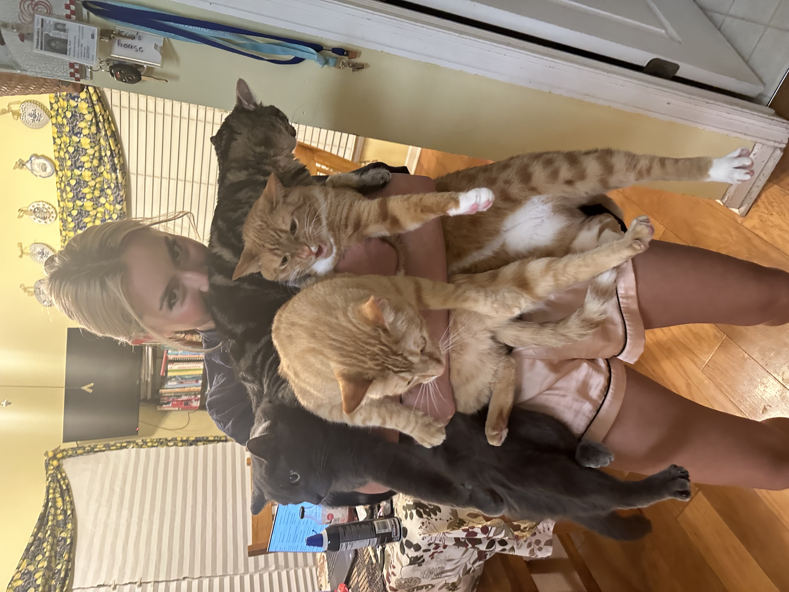

My name is Kelli Smith. I am a 22-year-old girl from Bellevue, Nebraska. I have lived in Nebraska my entire life. I am the last of four children to my parents Kevin and Vicky Smith.
I am a student at the University of Nebraska Omaha. I am a double-major student, studying Management Information Systems and Business Administration, with concentrations in Marketing, Management, Supply Chain Management, and Human Resources.
I am a business owner. I own and run my own photography business, Kelli Mallory Photography. I primarily photograph high school and college seniors, couples, and families. In addition to this, I maintain the website, social media, and all the communications. With this job, I am busy all year round, but a majority of my photoshoots take place from May to November. I love my job because I love meeting and working with lots of people.

Outside of school and work, I have a few other passions. My first is taking care of animals. I own four cats named Sabyr, Symba, Sunny, and Tallulah. I also own an axolotl named Jesseppee. I am a huge animal lover, so spending time with them is my favorite thing to do.

In addition to this, I love to travel. I have been to 15 different countries, with my top three favorites being Austria, Switzerland, and Croatia. I hope to visit 20 countries in total by the time I am 30.
Meet My Best Friend: Tallulah